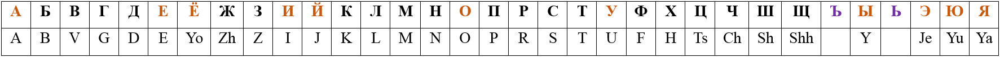

The Russian Alphabet is based on the Cyrillic script. It consists of 11 vowels, 20 consonants and 2 pronunciation signs, a total of 33 letters. There is no difference between lower and upper case letters.
The first row in the table below contains Cyrillic letters while the second row contains their translation to Latin letters. You need to memorize both rows by heart. Russians use the Latin translations when their own letters aren’t available on their current input device (a foreign phone or computer). Sometimes they even use the Latin letters out of convenience. An example: Hello = Привет = Privet. Listen to the Alphabet audio track and try to repeat after the speaker.
Ъ - The Hard Sign is rarely used, indicates a slight pause between syllables.
Ь - The Soft Sign makes the previous letter soft. A consonant becomes soft when it is pronounced with the middle of the tongue raised towards the roof of the mouth.
Stresses are very important in the Russian language, below are some important guidelines to follow. Try to always listen for the stressed vowel in a word when you hear a new word. Stresses will hopefully come naturally when you memorize new words and sentences with the help of audio.
Play